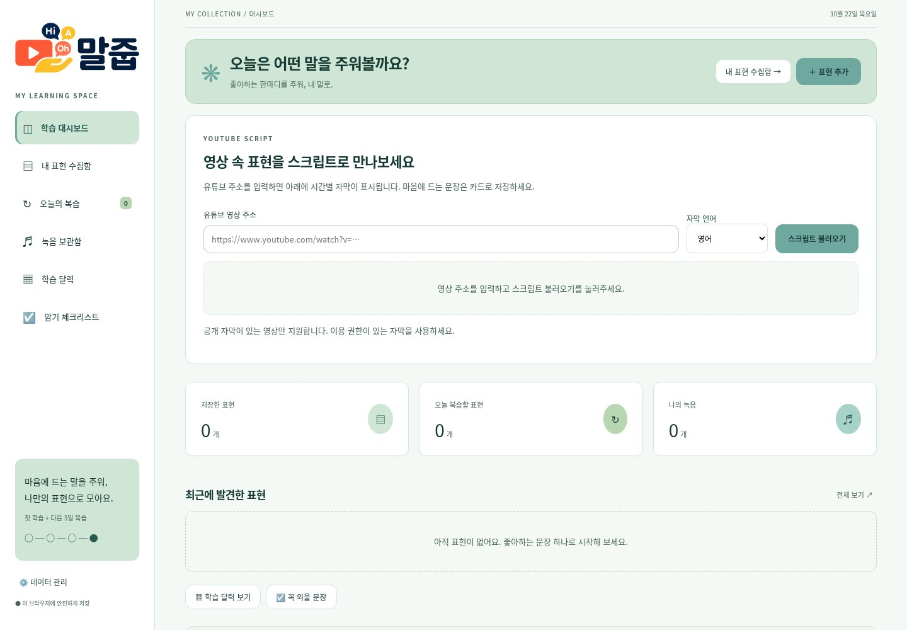
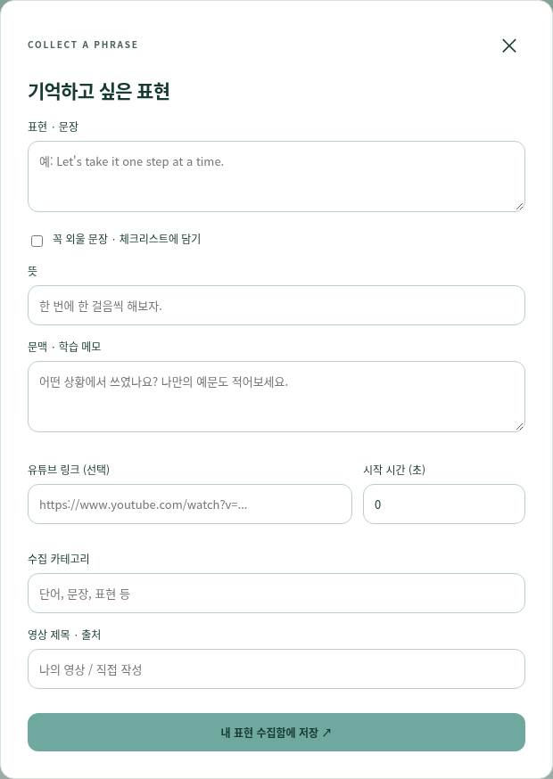

01 / 데이터 기반 인사이트
서울 핫플 분석
창업자와 소비자의 목적에 맞춰 상권 데이터를 탐색합니다.
설계 판단같은 데이터를, 창업자와 소비자의 서로 다른 질문에 맞춰 구성했습니다.
담당 역할·구현공공 데이터 정제·시각화, 목적별 대시보드 구현
현장의 문제를 이해하고, 데이터와 AI로 사용하기 쉬운 서비스를 설계합니다.8년의 운영·고객 응대 경험을 바탕으로 기획부터 웹·모바일 화면 구현까지 연결하는 박민선입니다.
문제를 해석하고, 사용자 흐름과 화면으로 구현한 네 가지 작업입니다.
창업자와 소비자의 목적에 맞춰 상권 데이터를 탐색합니다.
설계 판단같은 데이터를, 창업자와 소비자의 서로 다른 질문에 맞춰 구성했습니다.
담당 역할·구현공공 데이터 정제·시각화, 목적별 대시보드 구현


영상에서 발견한 표현을 수집하고, 말하며 복습합니다.
설계 판단표현을 저장하는 데서 끝나지 않고, 말하기와 복습으로 이어지게 설계했습니다.
담당 역할·구현표현 수집·녹음·복습 흐름 기획 및 웹앱 구현

큰 버튼과 음성·터치로 시니어의 일상 활동을 돕습니다.
설계 판단선택지는 줄이고, 터치와 음성으로 접근 방식을 넓혔습니다.
담당 역할·구현모바일 UI, 두뇌 운동·음성 입력·기억 기록 구현
옛 신문을 읽고 참여하는 웹·모바일 콘텐츠로 확장합니다.
설계 판단읽기 어려운 아카이브를 직접 단서를 찾는 참여형 경험으로 확장했습니다.
담당 역할·구현팀 프로젝트 · 전체 DB·사건 자료, 웹·모바일 게임 구현
일곱 가지 작업을 짧게 살펴보고, 관심 있는 프로젝트의 상세 내용을 열어보세요.
데이터를 목적에 맞게 해석하고, 탐색과 의사결정을 돕는 경험입니다.
 PROJECT CONCEPT / VISUAL STUDY
PROJECT CONCEPT / VISUAL STUDY사용자 문제를 기능과 흐름으로 구체화한 서비스·시제품입니다. 프로젝트별 AI 적용 범위를 구분해 소개합니다.

사용자의 상황을 이해하고, 쉬운 이용과 상품 탐색을 설계합니다.

자료와 일상의 관찰을 이야기와 비주얼 콘텐츠로 연결합니다.
깊이 있는 문제의식과 꾸준한 학습으로, 기술과 사람 사이의 거리를 좁힙니다.
UI/UX·웹 디자이너 박민선입니다. 복잡한 데이터와 콘텐츠를 이해하기 쉬운 화면으로 설계하고, 웹·모바일 인터랙션으로 구현합니다.
3D 공간부터 시니어 서비스까지, 사용자의 상황에 맞는 경험을 만듭니다. 경성야록에서는 전체 DB와 웹·모바일 게임 구현을 담당했습니다.
8년간의 실무 운영과 고객 소통으로 다진 체계성을 바탕으로, 새로운 기술을 배우고 기획 의도를 화면에 담습니다.
프로젝트에서 드러나는 접근 방식과 구현 사례입니다.
자산 관리와 일정 조율로 다진 체계성을 UI 구조화에, 꼼꼼함을 일관된 마크업과 화면 디테일에 담습니다.
고객 소통에서 배운 공감으로 사용 장벽을 낮춥니다. 시니어 헬퍼의 큰 버튼과 음성 입력에 이 관점을 담았습니다.
촬영과 이미지 편집 경험을 웹 화면의 시각 구성과 사진 기반 영상 제작에 활용합니다.
경성야록의 전체 DB와 웹·모바일 게임을 구현하며, 데이터 정리부터 사용자 인터랙션까지 연결했습니다.
프로젝트 제작에 활용한 AI와 개발·디자인 도구를 역할별로 정리했습니다.
Visual Studio Code · Google Antigravity
코드 편집부터 에이전트 협업·실행 검토까지.
ChatGPT · OpenAI Codex · Claude
아이디어 정리, 코드 구현과 오류 해결.
Ultralytics YOLO · Hugging Face
이미지 속 단서 탐지, 공개 모델·데이터 조사.
FastAPI
EchoChamber의 대화·메모리·관계망 API 연동.
Figma
사용자 흐름과 컴포넌트의 일관성 설계.
Newtake · Flow
사진과 아이디어를 AI 영상으로 확장.
영상 작업 보기 ↗프로젝트의 목적에 맞춰 필요한 도구를 선택합니다.
인터페이스 디자인과 구현에 대한 고민을 공유하고 함께 답을 찾습니다.
유선이나 이메일 등 편하신 채널로 연락 주시면 빠르게 회신드리겠습니다.